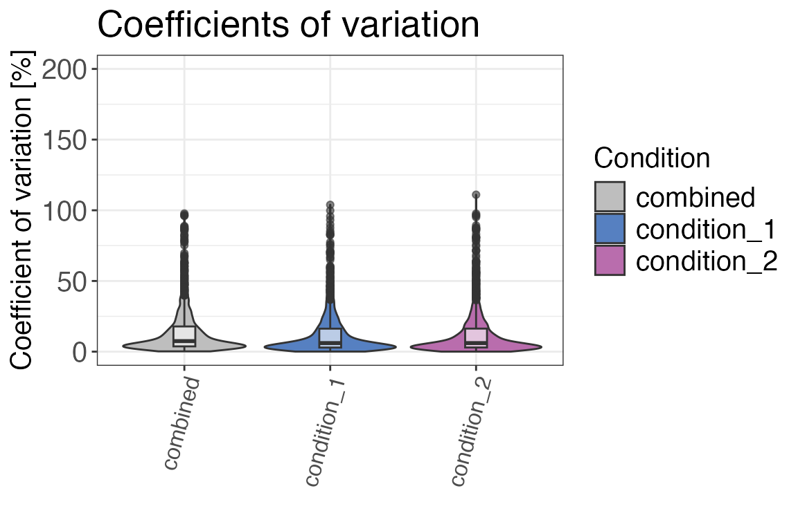
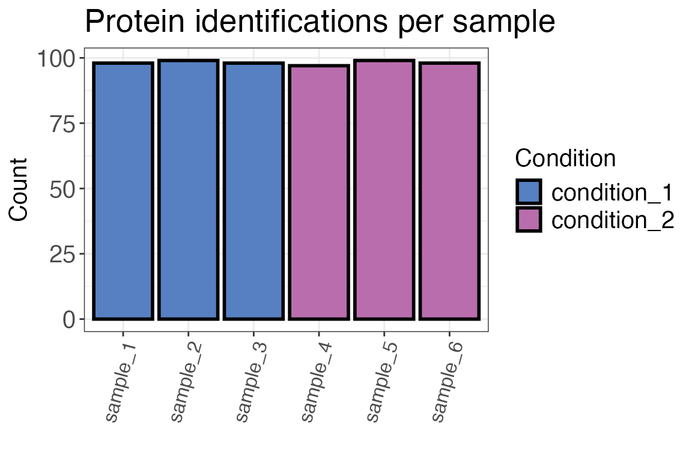
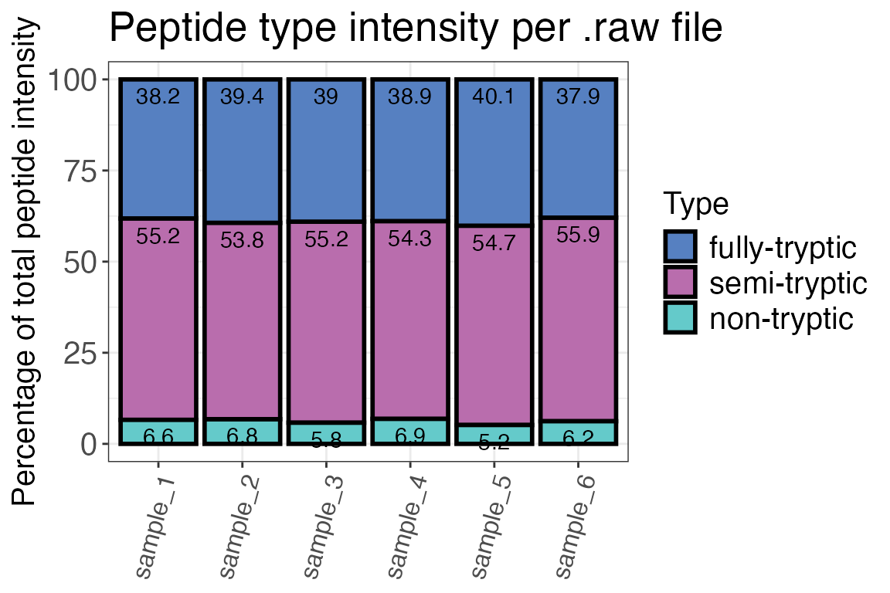
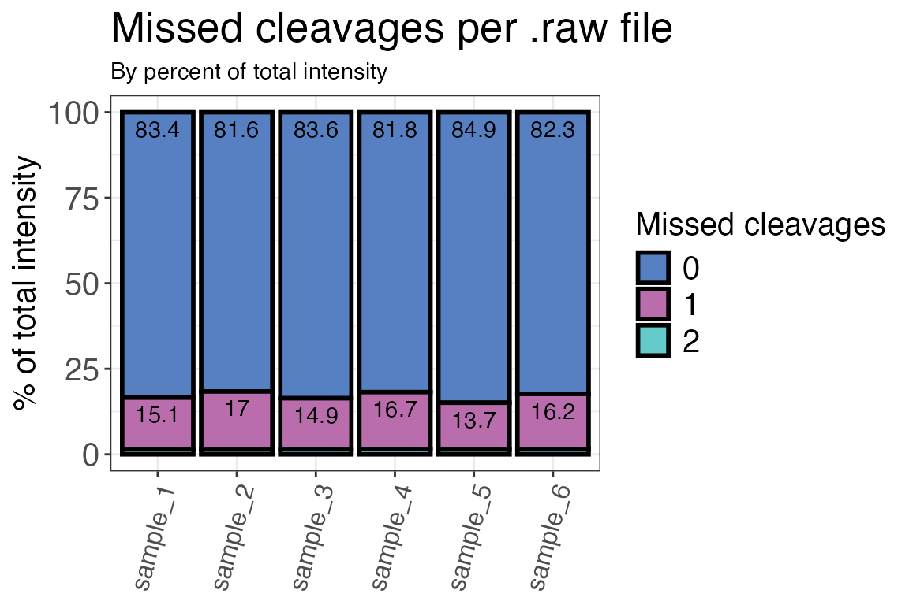
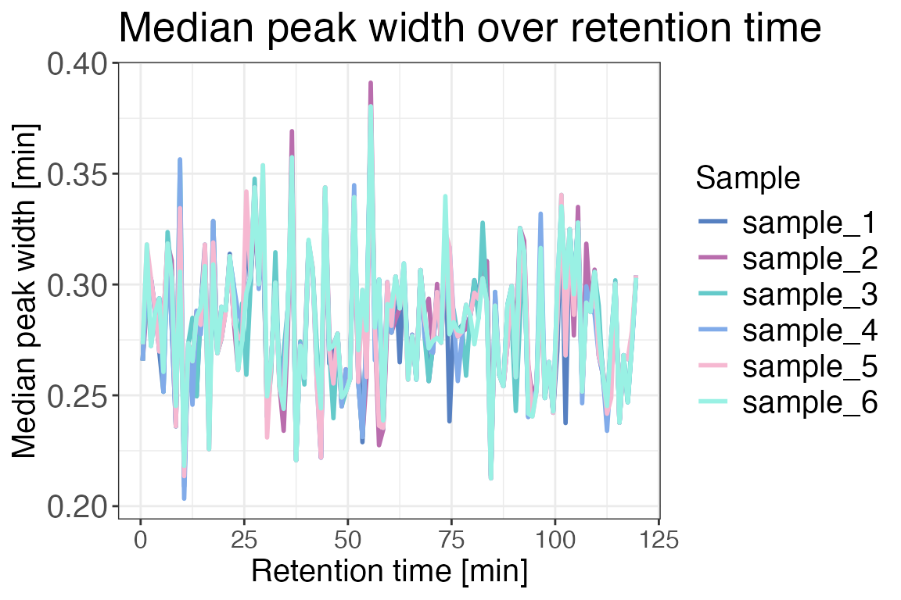
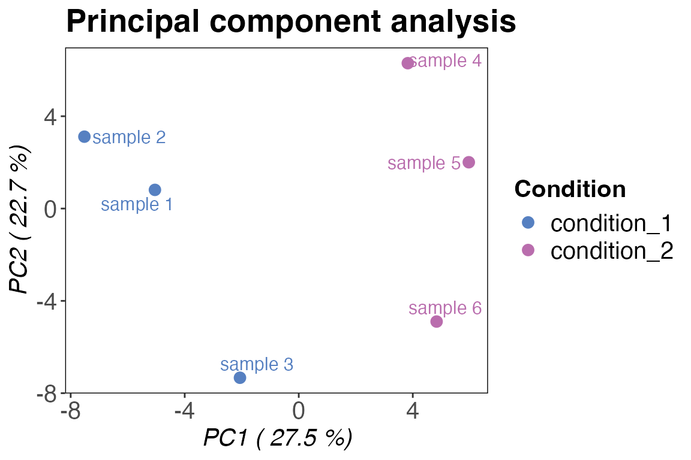

vignettes/quality_control_workflow.Rmd
quality_control_workflow.RmdThis vignette will give you an overview of how you can perform quality control of your bottom-up proteomics or LiP-MS data. For help with data input and to make sure that you are using the right format please check out the input preparation vignette. For help with data analysis you can check out our single dose treatment vignette and our data analysis vignette for dose-response data.
When working with proteomics and limited proteolysis-coupled mass spectrometry (LiP-MS) data, it is important to ensure that the data is of sufficient quality before inferring biological meaning from it. The goal is to assess if the data quality is homogenous among the different measurements (i.e. samples) of an experiment and if there are outliers that should be excluded.
In general, there are several ways in which this can be done:
Please note that this is not a complete list, it is just intended to give you an idea of the different possibilities. There are many more software options and R packages for quality control published to date.
protti includes several functions that make it easy for the user to compare the different samples in one experiment. Some functions in this R package are specific for LiP-MS data analyses, whereas others can also be used for general proteomics analyses.
You can read more about specific functions and how to use them by calling e.g. ?qc_cvs (for the qc_cvs() function). Calling ? followed by the function name will display the function documentation and give you more detailed information about the function. This can be done for any of the functions included in the package.
This document will give you an overview of QC functions included in protti and will show you how they can be applied to your data. The examples in this file are run on synthetic data, which is created with the function create_synthetic_data().
The functions in protti are tailored towards the analysis of DIA data, based on the output of the search engine Spectronaut™. However, if you have any other data, such as DDA data that was searched with a different search engine, you can still apply protti’s functions. Just make sure that your data frame contains tidy data. That means data should be contained in a long format (e.g. all sample names in one column) rather than a wide format (e.g. each sample name in its own column). You can easily achieve this by using the pivot_longer() function from the tidyr package. If you are unsure about what your input data should look like, please use the create_synthetic_data() function and compare this to your data. You can read more about all of this here.
The input data should have a similar structure to this example:
| Sample | Replicate | Peptide Sequence | Condition | log2(Intensity) |
|---|---|---|---|---|
| sample1 | 1 | PEPTIDER | treated | 14 |
| sample1 | 1 | PEPTI | treated | 16 |
| sample1 | 1 | PEPTIDE | treated | 17 |
| sample2 | 1 | PEPTIDER | untreated | 15 |
| sample2 | 1 | PEPTI | untreated | 18 |
| sample2 | 1 | PEPTIDE | untreated | 12 |
Before we can start analysing our data, we need to load the protti package. This is done by using the base R function library(). In addition, we are also loading the packages magrittr and dplyr. Both magrittr and dplyr are part of the tidyverse, a collection of packages that provide useful functionalities for data processing and visualisation. If you use many tidyverse packages in your workflow you can easily load all at once by calling library(tidyverse).
After having loaded the required packages we can create a synthetic dataset, that contains data similar to data obtained from a treatment experiment with e.g. a protein, metabolite or small-molecule. You can skip this step if you have your own data ready.
We are creating a random dataset with 100 different proteins, out of which 5 % are significantly changing upon treatment. The dataset includes 3 replicates for 2 different conditions (treated and untreated).
The output of the create_synthetic_data() function is modeled after real LiP-MS data and its commonly observed data distributions.
Please note that generally, quality control should be conducted on raw unfiltered data (the direct output of your search engine of choice).
# by setting the seed we are making sure that the random object generation can be reproduced
set.seed(123)
data <- create_synthetic_data(n_proteins = 100,
frac_change = 0.05,
n_replicates = 3,
n_conditions = 2,
method = "effect_random",
additional_metadata = TRUE)A good first step of quality control is to check if coefficients of variation between replicates are in a reasonable range. Ideally, these should be below 15-20 %. If you see groups with higher CVs, there might have been a sample preparation error or the instrument performance was not ideal at the time of measurement. You can check if after normalise() (depending on whether your search engine has performed normalisation already) your CVs improve.
To conduct the CV-based quality control, we make use of the function qc_cvs(). This function calculates the coefficients of variation. The output can either be a table or a plot of coefficients of variations for each condition. Below we are returning a CV table and a violin plot, showing the CVs for different conditions.
The CVs (in percent) are calculated with the following formula:
\[CV = \frac{standard ~ deviation}{mean} * 100\]
Since the CV function works only with raw values, we will backtransform our log2 transformed data and create a new column called raw_intensity from the peptide_intensity_missing column which contains peptide intensities. To create the new column, we are using the function mutate() from the R package dplyr. We also make use of the pipe operator %>% included in the R package magrittr which takes the output of the preceding function and supplies it as the first argument of the following function. Using %>% makes code easier to read and follow.
The “combined” group of CVs contains CVs across all samples and not only across the replicates of a certain condition. Ideally the combined CVs should always be the group with the highest CV. This would indicates that CVs within conditions are low and the treatment had and effect that causes an increase in overall CVs. If the treatment did not have an effect or only a very small one then the combined CV could be as high as the CVs of individual conditions. If an individual condition has a higher CV than the combined CV then there was potentially a problem with one or multiple of the samples. You can check if there are suspicious samples behaving differently from the rest in the other quality control metrics. If there is a consistent different behaviour these samples should potentially be excluded for analysis. Sometimes a condition can also just be noisy because of the treatment in this condition that causes a larger variation. Therefore comparing individual CVs with the combined CV should only be done with caution.
input <- data %>%
# as the data is log2 transformed, we need to transform it back before calculating the CVs
mutate(raw_intensity = 2^peptide_intensity_missing)
qc_cvs(data = input,
grouping = peptide,
condition = condition,
intensity = raw_intensity,
plot = FALSE)
#> # A tibble: 2 × 3
#> condition median_cv median_cv_combined
#> <chr> <dbl> <dbl>
#> 1 condition_2 6.06 7.49
#> 2 condition_1 6.07 7.49
qc_cvs(data = input,
grouping = peptide,
condition = condition,
intensity = raw_intensity,
plot = TRUE,
plot_style = "violin")
The number of protein or peptide identifications should be similar for different samples. If there are significanlty less observations in one sample, this might indicate a sample preparation or measurement error.
For the analysis of the number of identifications of precursors, peptides or proteins we use the function qc_ids(). This function can return either a table or a plot. The output of this function - and also of a lot of other protti functions - can be plotted in an interactive plot that makes use of the R package plotly. You can plot an interactive version of the plot by setting interactive = TRUE within the function call.
qc_ids(data = input,
sample = sample,
grouping = protein,
intensity = peptide_intensity_missing,
condition = condition,
plot = FALSE)
#> # A tibble: 6 × 3
#> condition sample count
#> <chr> <chr> <int>
#> 1 condition_1 sample_3 98
#> 2 condition_2 sample_4 97
#> 3 condition_2 sample_5 99
#> 4 condition_2 sample_6 98
#> 5 condition_1 sample_2 99
#> 6 condition_1 sample_1 98
qc_ids(data = input,
sample = sample,
grouping = protein,
intensity = peptide_intensity_missing,
condition = condition,
title = "Protein identifications per sample",
plot = TRUE)
Now that we had a look at protein IDs, we should also check peptide identifications for homogeneity across samples. An important factor to take into account when analysing LiP-MS data are peptide types (tryptic, semi-tryptic, non-tryptic). They can give us an idea about the reproducibility of cleavage events in the experiment and if our treatment influenced protease activity or the digest in general.
In a standard LiP-MS experiment we use 3 different proteases:
Peptide types can be assessed in Spectronaut directly or by using the protti function assign_peptide_type(). This function takes amino acids before and after the first and last amino acid in the peptide into account. A peptide that starts after a lysine or arginine and ends with a lysine or arginine is a tryptic peptide. A peptide that has one proteinase K cleavage site (not lysine or arginine) and one trypsin cleavage site either at the beginning or at the end of the peptide is a semi-tryptic peptide. A peptide that does not have any trypsin cleavage sites is a non-tryptic peptide. If information about the amino acid before and the last amino acid of a peptide are not available in your data you can use the find_peptide function from the protti package to create it.
We are going to use the function qc_peptide_type() to evaluate the distribution of peptide types between our samples. The function can return a plot or a table, based on either peptide type counts or intensities. Both are equally important when assessing how homogenous the samples are. For method = intensity the function uses raw intensity values, so we are going to use the column raw_intensity which we added previously.
In a typical LiP-MS experiment, there should be few non-tryptic peptides. The peptide type distribution for fully- and semi-, and non-tryptic peptides depends on your digestion conditions (i.e. temperature, duration, concentration).
qc_peptide_type(data = input,
sample = sample,
peptide = peptide,
pep_type = pep_type,
method = "intensity",
intensity = raw_intensity,
plot = TRUE,
interactive = FALSE)
qc_peptide_type(data = input,
sample = sample,
peptide = peptide,
pep_type = pep_type,
method = "count",
plot = TRUE,
interactive = FALSE)The function qc_intensity_distribution() plots all precursor, peptide or protein intensities for each sample as a boxplot if method “boxplot” is selected. This is helpful for quick assessment of any major sample losses or measurement issues.
Rrun intensities can also be assessed by plotting the median run intensities as a line plot. This helps you quickly assess if there are any trends in your data. The function to use for this analysis is qc_median_intensities().
qc_intensity_distribution(data = input,
sample = sample,
grouping = peptide,
intensity_log2 = peptide_intensity_missing,
plot_style = "boxplot")
qc_median_intensities(data = input,
sample = sample,
grouping = peptide,
intensity = peptide_intensity_missing)The charge state distibution of the detected peptides can be assessed with qc_charge_states(). Similar to the peptide types, this should also be homogenous for the different samples. The function can return either a plot or a table based on counts of peptides with a specific charge state or the intensities of these peptides. For method = "intensity" the function requires the raw intensity values created previously as its input.
qc_charge_states(data = input,
sample = sample,
grouping = peptide,
charge_states = charge,
method = "intensity",
intensity = raw_intensity,
plot = TRUE)An important measure of efficient digests with e.g. trypsin are the number of missed cleavages. The proteases trypsin and Lys-C both cleave after positively charged amino acids lysine (K) and arginine (R). If a measured peptide includes either K or R within its sequence, i.e. not at the last position, it contains a missed cleavage site. These peptides are important to take into account because they can tell you if your tryptic digest was inefficient. The number of missed cleavages should generally be low in a proteomics or LiP-MS dataset.
We are going to check the numbers of missed cleavages in our dataset by using the function qc_missed_cleavages(). It can assess missed cleavages based on the count of peptides with missed cleavages or the intensities of the corresponding peptides. For method = "intensity" the function uses the raw (not log2 transformed) intensity values. You can have the function either return a plot or a table.
qc_missed_cleavages(data = input,
sample = sample,
grouping = peptide,
missed_cleavages = n_missed_cleavage,
method = "intensity",
intensity = raw_intensity,
plot = TRUE)
The following function gives you insight into the protein coverage (i.e. what percentage of the protein sequence is covered by the identified peptides) in the dataset. For a LiP-MS experiment, or any other peptide-centric proteomics experiment, high sequence coverages are desirable.
To assess the protein coverage distribution, we are going to use the function qc_protein_coverage(). If you do not have a column containing the protein coverages in your data, you can use the function calculate_sequence_coverage() to obtain this information.
qc_sequence_coverage(data = input,
protein_identifier = protein,
coverage = coverage)In order to identify potential chromatographic issues that might have occurred during the measurement we can have a look at the chromatographic median peak widths over the complete chromatogram. To do this we are going to use the function qc_peak_width(). This function requires either the peak start and end times or the retention time and peak width. This information can be obtained from Spectronaut (or any other search engine of your choice). The peak widths should be similar for all the measured samples of the experiment.
qc_peak_width(data = input,
sample = sample,
intensity = peptide_intensity_missing,
retention_time = retention_time,
peak_width = peak_width)
The function qc_data_completeness() checks how many of all detected precursors, peptides or proteins were identified in each sample. The function can return either a plot or a table.
qc_data_completeness(data = input,
sample = sample,
grouping = peptide,
intensity = peptide_intensity_missing,
plot = TRUE)For different kinds of analyses (e.g. t-tests) it is important that your data intensity follows a normal distribution. To ensure that this is the case, we are going to use the function qc_intensity_distriubution(). The function returns a histogram plot when plot_style = "histogram" showing how the intensities are distributed.
qc_intensity_distribution(data = input,
grouping = peptide,
intensity_log2 = peptide_intensity_missing,
plot_style = "histogram")Another approach to quality control is to check the correlation of your samples. Ideally, replicates should cluster together and different treatment conditions should be separated. We are now going to check if this is the case for our data by using the function qc_sample_correlation(). The function will return a correlation heatmap with a comparison of all samples.
qc_sample_correlation(data = input,
sample = sample,
grouping = peptide,
intensity_log2 = peptide_intensity_missing,
condition = condition,
interactive = FALSE)Another popular quality control method (which could also be considered part of data analysis) is the principal component analysis (PCA). Generally, PCA is a method that reduces dimensionality of large datasets. In our case this helps us to quickly assess how similar or different our replicates and conditions are. We are going to use qc_pca() to compute and plot a PCA for our data. Before plotting your PCA you can check how much of your variance can be explained with each of the principle components. To do that you can plot a scree-plot using the function qc_pca() and setting plot_style = "scree". In this example we can see that the variance can be best explained with PC1 and PC2 so we can go ahead and plot these.
qc_pca(
data = data,
sample = sample,
grouping = peptide,
intensity = peptide_intensity_missing,
condition = condition,
digestion = NULL,
plot_style = "scree"
)
qc_pca(
data = data,
sample = sample,
grouping = peptide,
intensity = peptide_intensity_missing,
condition = condition,
components = c("PC1", "PC2"),
plot_style = "pca"
)
There are two additional QC functions that are not included in this vignette:
qc_contaminants() is a function that can be used if proteins are assigned as contaminants. This information can for example be exported from MaxQuant. The function calculates the percentage of proteins annotated to be contaminants and returns either a table or a plot.qc_proteome_coverage() calculates the proteome coverage for each sample and the whole experiment and returns either a plot or a table.